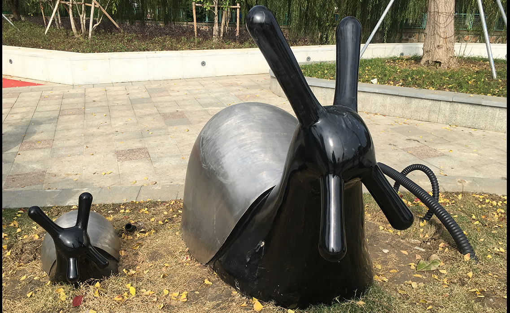
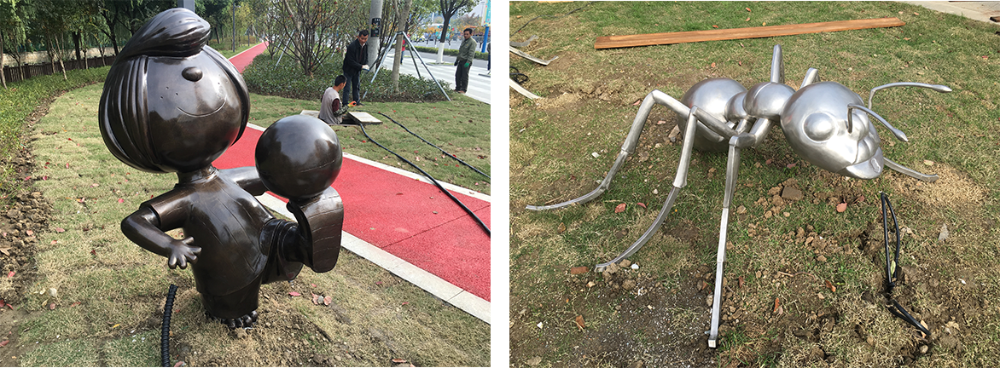
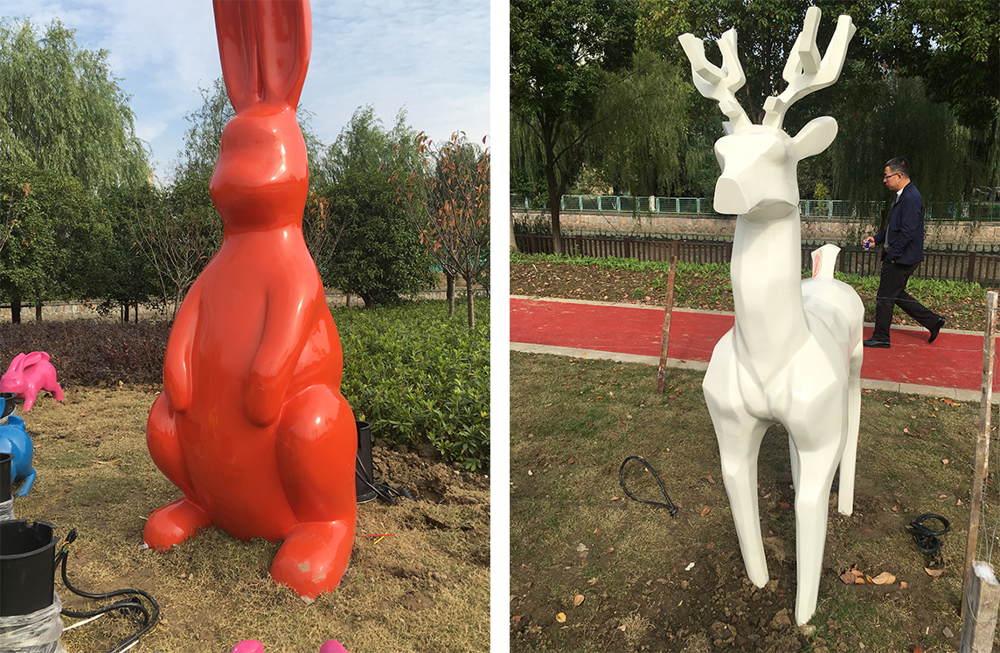
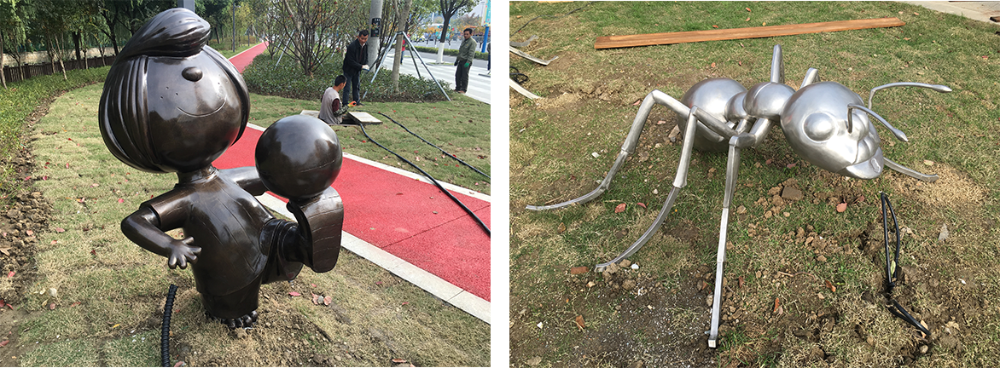
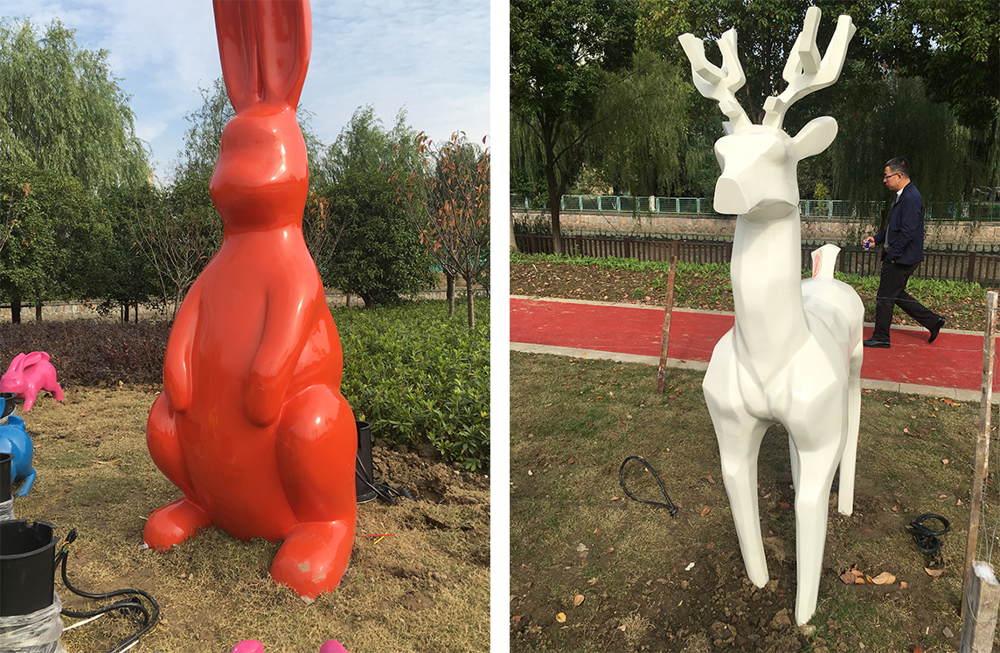
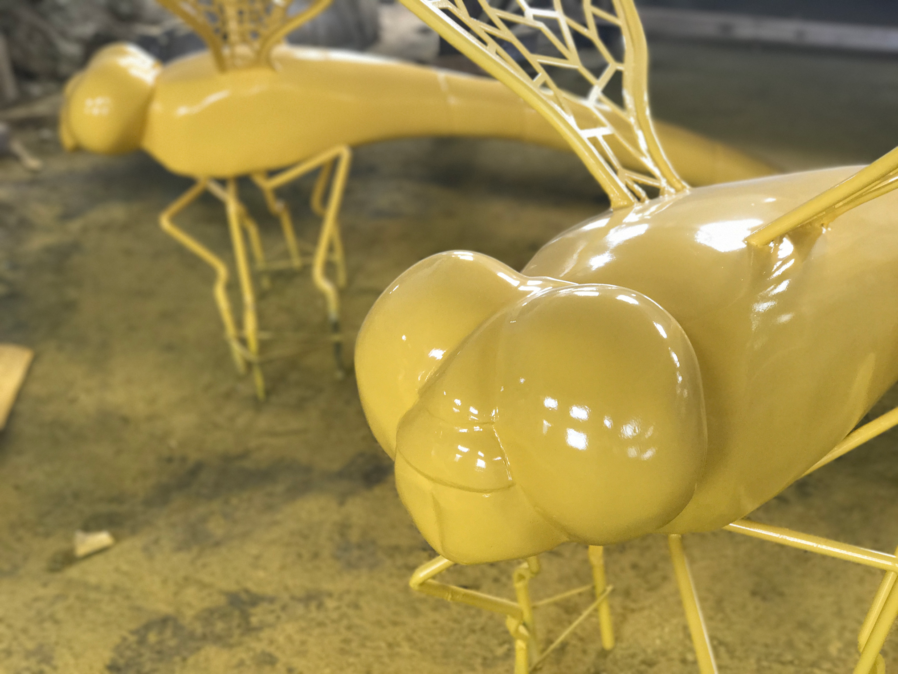
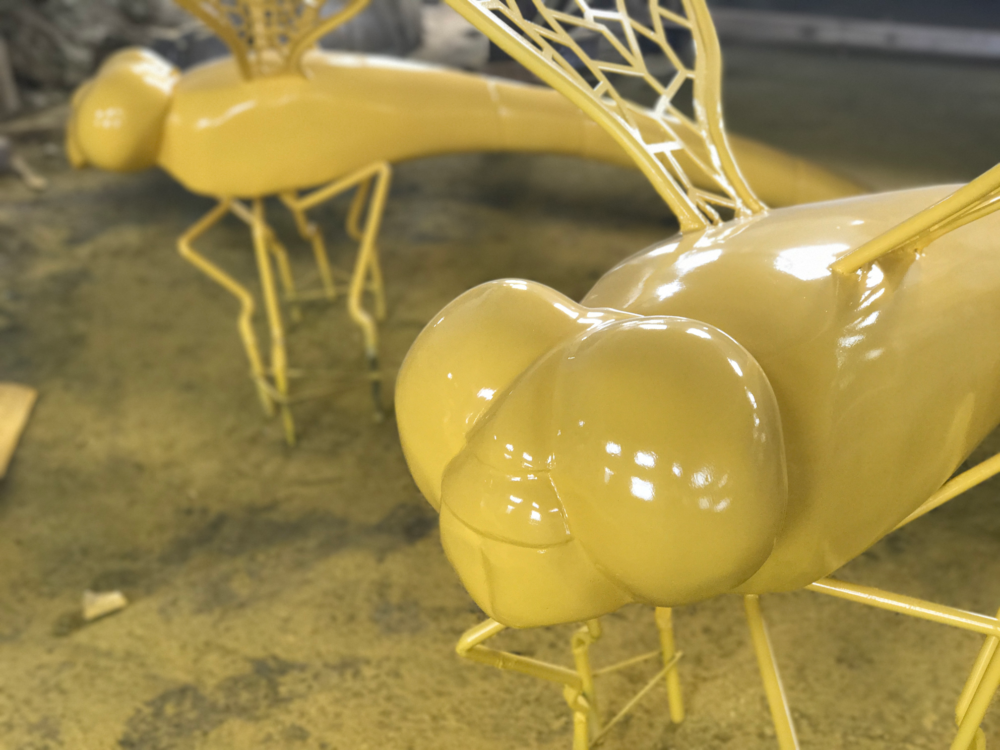

苏州市城际路艺术品雕塑
Jiuzhaigou yuerong hotel signage system
项目地点：苏州市高新区城际路
项目面积：2千米
设计时间：2017年
苏州城际路是苏州高新区浒关开发区主要干道，沿线有 苏州高新区高铁站、星际酒店、 甲级写字楼、永旺梦乐城、 宜家家居、浒关产业园等等。由于区域的发展和形象提升城 际路进行整体形象和景观提升。装饰艺术品雕塑在城际路的 市政景观更加的增资添彩。
 



 

 返回顶部
返回顶部